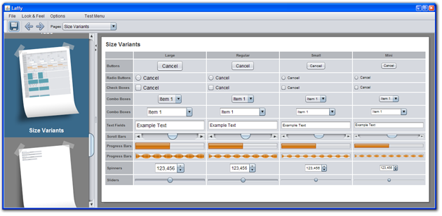

Laffy is a demo application which was designed for showing the features of and testing the Nimbus Look and Feel. The aim is for Laffy to support all look and feels and demonstrate the complete range of Swing features and options.
Laffy requires Java 6u10 or later and can be run using JavaWebstart:
Laffy is being developed as a public java.net project under SwingLabs and we welcome your participation:
Issues and bugs should be filed on the java.net project.
